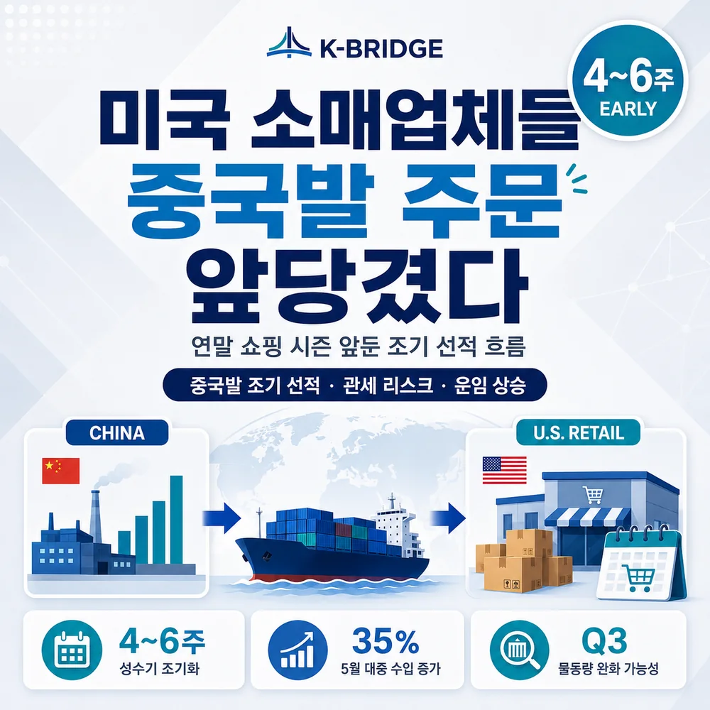
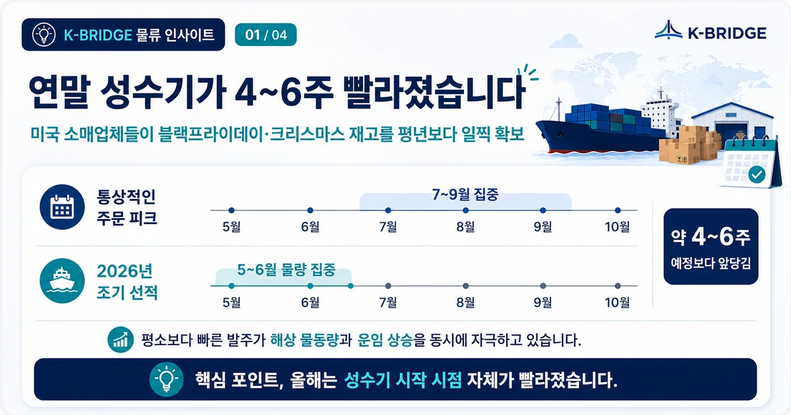
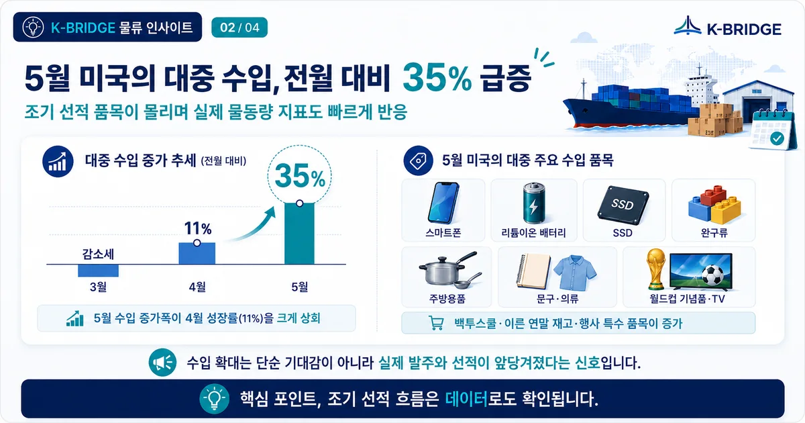
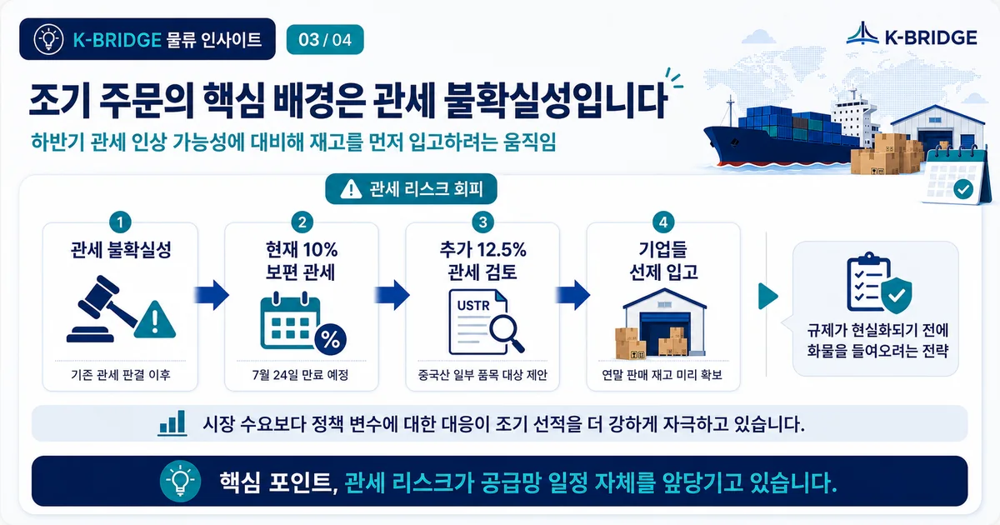
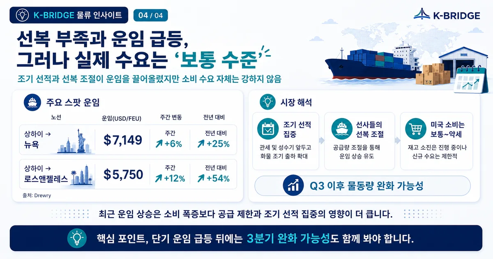

핵심 요약
올해 미국 소매업체의 연말 재고 주문은 평년보다 약 4~6주 빨라졌고, 5월 미국의 중국발 수입은 전월 대비 약 35% 증가했습니다. 다만 이는 소비가 폭발적으로 늘었다기보다 관세 불확실성에 대응한 재고 선확보와 선사의 공급 조절이 겹친 결과에 가깝습니다. 따라서 단기 운임 상승과 함께 3분기 물동량 둔화 가능성까지 같이 봐야 합니다.
연말 성수기가 4~6주 앞당겨졌습니다
일반적으로 미국의 연말 쇼핑 재고는 7월부터 9월 사이에 선적이 집중됩니다. 그러나 2026년에는 주요 소매업체들이 5월과 6월부터 중국발 주문을 늘렸습니다. 블랙프라이데이와 크리스마스 판매 물량을 미리 확보해, 하반기 관세 변동이나 공급망 차질이 발생해도 매장 재고를 지키려는 움직임입니다.

조기 선적 데이터와 품목 흐름이 먼저 반응했습니다
올해 조기 선적 흐름은 실제 수치에서도 확인됩니다. 2026년 5월 미국의 중국발 수입은 전월 대비 약 35% 증가했고, 스마트폰·리튬이온 배터리·SSD·완구류·주방용품·문구·의류·월드컵 관련 기념품과 TV 등 소비재 중심 품목이 빠르게 움직였습니다.

이처럼 조기 선적 품목이 몰린 배경에는 관세 불확실성이 있습니다. 하반기 관세 인상 가능성이 거론되자, 미국 소매업체들은 연말 판매용 재고를 미리 입고해 비용 리스크를 줄이려 했습니다. 즉 올해의 조기 주문은 단순한 소비 확대라기보다 정책 변수에 선제 대응한 성격이 더 강합니다.

프론트로딩(front-loading)은 관세 인상, 규제 변경, 파업, 성수기 혼잡 등에 앞서 화물을 미리 선적하는 전략입니다. 비용을 피할 수 있지만 재고 보유 기간과 자금 부담이 늘어난다는 점도 함께 고려해야 합니다.
선복은 빠듯해졌고 운임은 빠르게 뛰었습니다
중국발 예약이 예상보다 이르게 집중되면서 중국–미국 항로의 공간은 빠르게 타이트해졌습니다. 특히 일정 주차에 예약이 몰리고 선사들의 공급 조절이 더해지면, 실제 수요 증가폭보다 운임이 더 크게 움직일 수 있습니다.

| 항로 | 40FT 스팟 운임 | 주간 상승률 | 전년 대비 |
|---|---|---|---|
| 상하이 → 뉴욕 | $7,149 | +6% | +25% |
| 상하이 → 로스앤젤레스 | $5,750 | +12% | +54% |
위 수치는 2026년 6월 말 Reuters 보도에 인용된 Drewry 지표입니다. 실제 견적은 출항일, 선사, 장비 상황, 부대할증료에 따라 달라집니다.
운임 상승이 곧 강한 소비를 뜻하는 것은 아닙니다
실무적으로 중요한 포인트는, 최근 운임 급등이 미국 소비 폭증을 그대로 의미하지는 않는다는 점입니다. 조기 선적과 선사의 공급 조절이 동시에 작용하면서 단기 운임이 상승했지만, 실제 미국 소비 수요는 전반적으로 보통~약세 수준으로 해석됩니다.
- 단기 운임 상승만 보고 연말 최종 수요까지 강하다고 판단하지 않습니다.
- 임시 결항과 선복 감축이 운임에 미치는 영향을 함께 확인합니다.
- 미국 현지 재고 수준과 소매 판매 지표를 같이 봅니다.
- 조기 입고된 재고가 3분기 신규 주문을 줄일 가능성도 반영합니다.
3분기에는 물동량 둔화와 운임 변동성이 함께 나타날 수 있습니다
5월과 6월에 연말 재고가 상당 부분 앞당겨 이동했다면, 7월 이후에는 신규 주문이 정상화되거나 줄어들 수 있습니다. 관세가 실제로 높아질 경우 수입 단가 부담이 커져 주문 자체가 위축될 가능성도 있습니다.
다만 운임이 곧바로 안정된다고 단정할 수는 없습니다. 선사들이 수요 변화에 맞춰 임시 결항과 공급량을 조정하면, 물동량이 줄어도 특정 항차의 공간은 계속 부족할 수 있습니다. 따라서 하반기는 물량은 둔화되지만 운임은 주차별로 크게 흔들리는 시장이 될 수 있습니다.
한국 화주는 ‘예약 시점’보다 ‘전체 비용’을 먼저 봐야 합니다
미국향 수출이나 중국·아시아발 미국 수입을 준비하는 기업은 단순히 운임이 오르기 전에 서두르는 것보다, 관세와 재고 비용까지 합친 총비용을 비교해야 합니다.
- 선복: 목표 출항일보다 2~4주 앞서 스케줄과 장비 상황을 확인합니다.
- 재고: 조기 선적에 따른 창고료, 보험료, 운전자금 부담을 계산합니다.
- 경로: 미국 서안·동안, 직항·환적, 복수 선사 옵션을 비교합니다.
- 출고: 긴급 물량과 일반 물량을 나눠 FCL·LCL·항공을 조합합니다.
- 총비용: 해상운임, PSS·GRI 등 할증료, 관세, 내륙운송을 포함한 랜디드 코스트를 봅니다.
자주 묻는 질문
Q. 지금 미국향 화물은 무조건 빨리 예약해야 하나요?
Q. 운임이 오른 이유는 실제 소비가 늘었기 때문인가요?
Q. 서안과 동안 중 어느 쪽이 더 유리한가요?
미국향 선복과 운임, 한 항차만 보고 결정하지 마세요
케이브릿지는 출항 일정, 목적지, 화물 특성, 납기 조건을 기준으로 FCL·LCL·항공 옵션과 미국 내륙 연결 구간을 함께 검토합니다. 여러 스케줄의 총비용을 비교해 안정적인 출고 계획을 세워보세요.
참고 자료
· Reuters, “US retailers frontload China orders for holiday season, shipping firms say”, 2026-06-30
· 트레드링스, “미국 소매업체들, 연말 쇼핑 시즌 앞두고 중국발 주문 대거 앞당겨”, 2026-07-02
· Freightos, 2026년 해상운임·성수기 시장 업데이트
※ 본 글은 공개된 시장 자료를 바탕으로 작성한 일반 정보이며, 실제 운임·관세·선복은 견적 및 통관 시점에 반드시 재확인해야 합니다.